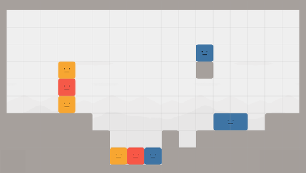
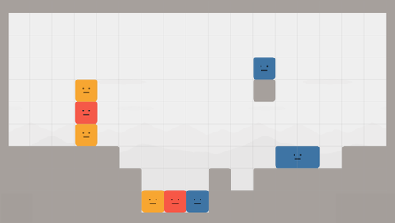

1.どんなパズル？
底の３色は上に登れないから、上から落としてくっつけるしかない。
となると、最終的な形はここまで確定する：
つまり、青ヨコ は下に落とさないし、黄色は ヨコ
は下に落とさないし、黄色は ヨコ にならない。
にならない。
青1コ の道中に穴がある。これをどうやって超える？ というパズル。
の道中に穴がある。これをどうやって超える？ というパズル。
close
底の３色は上に登れないから、上から落としてくっつけるしかない。
となると、最終的な形はここまで確定する：
つまり、青ヨコ は下に落とさないし、黄色は ヨコ
は下に落とさないし、黄色は ヨコ にならない。
にならない。
青1コ の道中に穴がある。これをどうやって超える？ というパズル。
の道中に穴がある。これをどうやって超える？ というパズル。
close
穴は で塞げるけど、上から落とすとくっついちゃう。
で塞げるけど、上から落とすとくっついちゃう。
くっつかないようにできないかな？
解答：別の色を間に挟んだら、くっつかない！
close
間に挟むか……。じゃあ、どうやって別の色を に乗せるか考えなきゃ。
に乗せるか考えなきゃ。
こいつが３マスの穴を渡れたらいいのになー。
解答：赤を落として、くっつけたらいけるよ！
close
ほんとだ！  が渡れるようになった。これで黄色
が渡れるようになった。これで黄色 を活用できるね！
を活用できるね！
さっそく 1コ乗せてみたけど……まだ がくっついちゃうな。 ( 1コだけ乗せる方法は 5. へ)
がくっついちゃうな。 ( 1コだけ乗せる方法は 5. へ)
タテ も同じくダメだね。
も同じくダメだね。
ヨコ もダメ。 1. で触れたけど、最終的にあり得ない形だよ。
もダメ。 1. で触れたけど、最終的にあり得ない形だよ。
あと試してないのは……ヒント：黄色をくっつけずに、2コ使うことかな。
解答： の左隣に 1コ、上に 1コ。黄色を配置だよ！
の左隣に 1コ、上に 1コ。黄色を配置だよ！
close
待って！ そもそも を1コずつ離す方法がわかんない。
を1コずつ離す方法がわかんない。
左岸の話だね。解答は下図参照：
close
さあ、あとは を1コずつ運ぶだけだ！
を1コずつ運ぶだけだ！
下図の配置にしたいんだけど、1度に 2コは運べないもんね。左隣に置いたら、もう左岸に戻れなくなるし……うーん？
そういう時は、ヒント：地形をよく見てみよう。
解答：右岸に注目。1つ目の黄色を乗せて、右岸まで運ぶ。2つ目の黄色を乗せて、左隣に置く。右岸の黄色を乗せて、乗せたまま位置につく。
close